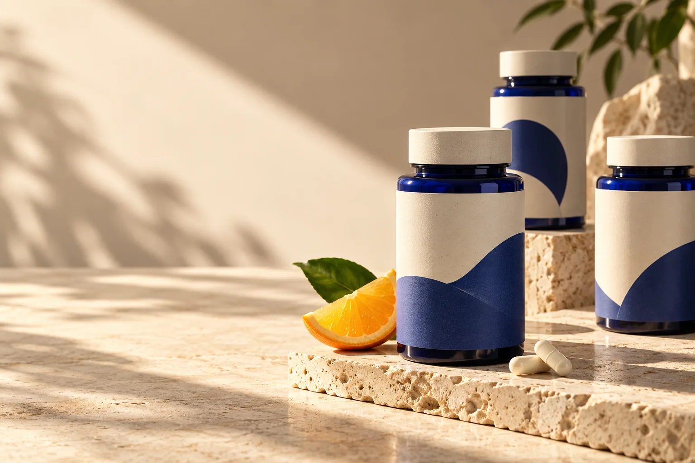
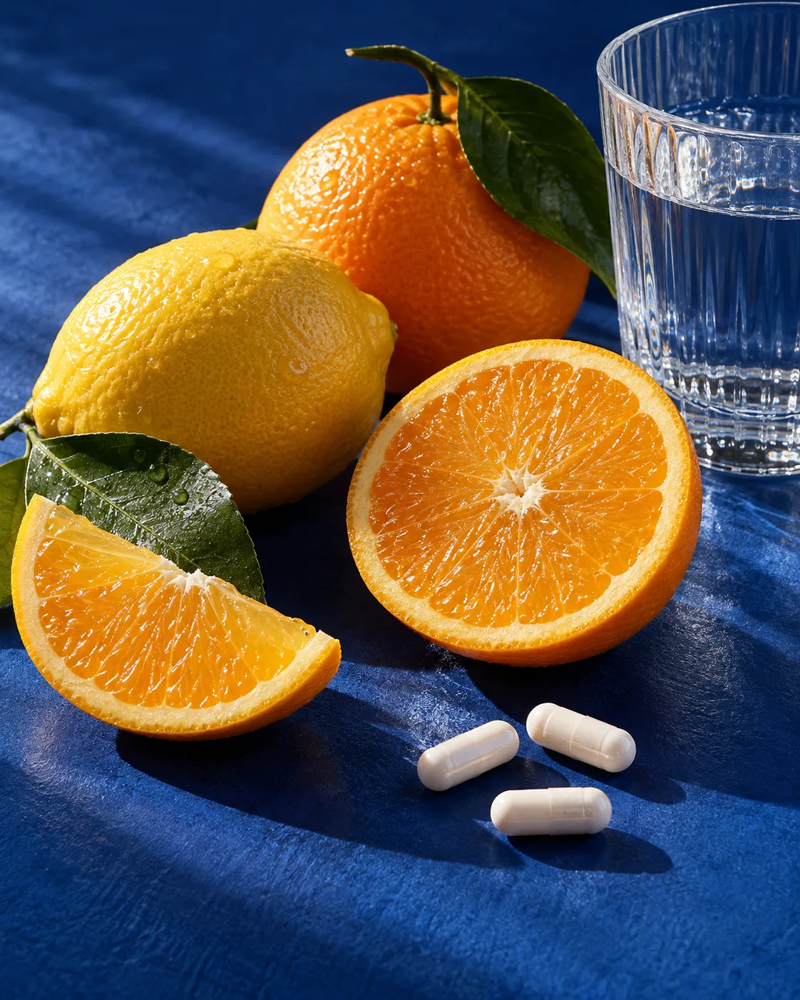

원료 확인
사용할 원료의 출처와 규격을 먼저 살핍니다.

제품을 고를 때 필요한 건
더 긴 성분표가 아닙니다.
온결은 원료를 고르는 이유, 함께 배합하는 이유, 매일 먹기 좋은 이유를 제품마다 설명할 수 있어야 한다고 생각합니다.

무엇을 넣었는지보다 중요한 건 왜 넣었는지입니다. 온결은 성분이 맡을 역할부터 정하고 배합을 시작합니다.
제품마다 필요한 이유가 다릅니다.
하루에 필요한 비타민과 미네랄을 한 번의 루틴으로 정리했습니다.
매일 먹는 제품이기에, 과정마다 무엇을 확인할지 먼저 정합니다.
사용할 원료의 출처와 규격을 먼저 살핍니다.
한 번에 먹는 양을 기준으로 성분을 조합합니다.
표기 사항과 제품 상태를 출고 전에 다시 확인합니다.
온결랩은 건강기능식품을 어렵지 않게 고를 수 있어야 한다고 생각합니다. 제품마다 핵심 성분과 섭취 방식을 분명히 제시하고, 선택이 가벼워지도록 제품군을 단정하게 유지합니다.